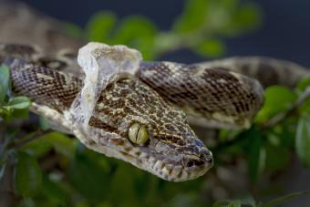

Dəri
İlan dərisi pulcuqlarla örtülüdür, hamar və quru quruluşa malikdir.
İlanların qarın və bel pulcuqlarının quruluşu fərqlidir. Dəri rəngləri çox
müxtəlidir. Bəziləri bir rəngə, bəziləri isə 3–4 rəngə sahibdir. Rəngli ilanlar,
əsasən, zəhərlidir. Ancaq zəhərli olmayan rəngli ilanlar da var. Rəngli dəri
təhlükəni bildirir və düşmənləri qorxutmaq üçün istifadə olunur, amma bu o demək
deyil ki, birrəngli ilanların dəriləri qorunmaq üçün əlverişsizdir. Birrəngli
ilanların rəngi daha çox bozumtul, qəhvəyi və qara rəngli olur ki, bu rənglər də
torpaqda, qumda, daşda gizlənmək üçün (kamuflyaj) ideal rənglərdir.
Dəri dəyişdirmə
Bir çox canlı kimi ilanlar da dəri dəyişdirir. Köhnə dəri ağız tərəfdən cırır,
ilan daş, ağac kimi obyektlərə sürtünərək dərisini çıxardır. Bu prosesin bir
neçə funksiyası var. İlk növbədə ilan köhnə dəridən azad olur, həm də
parazitlərdən təmizlənir.
